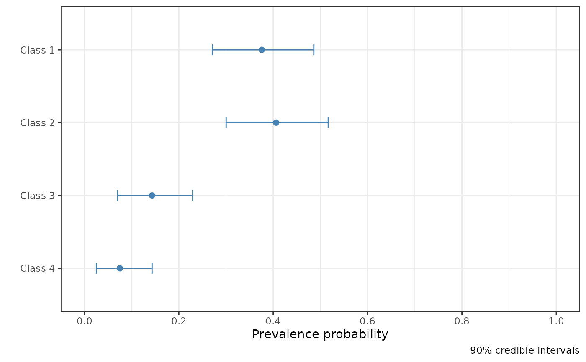

Plot a rater_fit object
# S3 method for rater_fit plot(x, pars = c("pi", "theta", "class_probabilities"), ...)
Arguments
| x | An object of class |
|---|---|
| pars | A character vector of the names of the parameters to plot. By
default: |
| ... | Other arguments. This should contain the which argument for theta plots. |
Value
If one parameter is requested a ggplot2 plot. If multiple parameters are requested a list of ggplot2 plots.
Examples
#> #> SAMPLING FOR MODEL 'dawid_skene' NOW (CHAIN 1). #> Chain 1: #> Chain 1: Gradient evaluation took 0.000152 seconds #> Chain 1: 1000 transitions using 10 leapfrog steps per transition would take 1.52 seconds. #> Chain 1: Adjust your expectations accordingly! #> Chain 1: #> Chain 1: #> Chain 1: Iteration: 1 / 2000 [ 0%] (Warmup) #> Chain 1: Iteration: 200 / 2000 [ 10%] (Warmup) #> Chain 1: Iteration: 400 / 2000 [ 20%] (Warmup) #> Chain 1: Iteration: 600 / 2000 [ 30%] (Warmup) #> Chain 1: Iteration: 800 / 2000 [ 40%] (Warmup) #> Chain 1: Iteration: 1000 / 2000 [ 50%] (Warmup) #> Chain 1: Iteration: 1001 / 2000 [ 50%] (Sampling) #> Chain 1: Iteration: 1200 / 2000 [ 60%] (Sampling) #> Chain 1: Iteration: 1400 / 2000 [ 70%] (Sampling) #> Chain 1: Iteration: 1600 / 2000 [ 80%] (Sampling) #> Chain 1: Iteration: 1800 / 2000 [ 90%] (Sampling) #> Chain 1: Iteration: 2000 / 2000 [100%] (Sampling) #> Chain 1: #> Chain 1: Elapsed Time: 2.48566 seconds (Warm-up) #> Chain 1: 2.39007 seconds (Sampling) #> Chain 1: 4.87573 seconds (Total) #> Chain 1: #> #> SAMPLING FOR MODEL 'dawid_skene' NOW (CHAIN 2). #> Chain 2: #> Chain 2: Gradient evaluation took 0.000144 seconds #> Chain 2: 1000 transitions using 10 leapfrog steps per transition would take 1.44 seconds. #> Chain 2: Adjust your expectations accordingly! #> Chain 2: #> Chain 2: #> Chain 2: Iteration: 1 / 2000 [ 0%] (Warmup) #> Chain 2: Iteration: 200 / 2000 [ 10%] (Warmup) #> Chain 2: Iteration: 400 / 2000 [ 20%] (Warmup) #> Chain 2: Iteration: 600 / 2000 [ 30%] (Warmup) #> Chain 2: Iteration: 800 / 2000 [ 40%] (Warmup) #> Chain 2: Iteration: 1000 / 2000 [ 50%] (Warmup) #> Chain 2: Iteration: 1001 / 2000 [ 50%] (Sampling) #> Chain 2: Iteration: 1200 / 2000 [ 60%] (Sampling) #> Chain 2: Iteration: 1400 / 2000 [ 70%] (Sampling) #> Chain 2: Iteration: 1600 / 2000 [ 80%] (Sampling) #> Chain 2: Iteration: 1800 / 2000 [ 90%] (Sampling) #> Chain 2: Iteration: 2000 / 2000 [100%] (Sampling) #> Chain 2: #> Chain 2: Elapsed Time: 2.35304 seconds (Warm-up) #> Chain 2: 2.38981 seconds (Sampling) #> Chain 2: 4.74284 seconds (Total) #> Chain 2: #> #> SAMPLING FOR MODEL 'dawid_skene' NOW (CHAIN 3). #> Chain 3: #> Chain 3: Gradient evaluation took 0.000138 seconds #> Chain 3: 1000 transitions using 10 leapfrog steps per transition would take 1.38 seconds. #> Chain 3: Adjust your expectations accordingly! #> Chain 3: #> Chain 3: #> Chain 3: Iteration: 1 / 2000 [ 0%] (Warmup) #> Chain 3: Iteration: 200 / 2000 [ 10%] (Warmup) #> Chain 3: Iteration: 400 / 2000 [ 20%] (Warmup) #> Chain 3: Iteration: 600 / 2000 [ 30%] (Warmup) #> Chain 3: Iteration: 800 / 2000 [ 40%] (Warmup) #> Chain 3: Iteration: 1000 / 2000 [ 50%] (Warmup) #> Chain 3: Iteration: 1001 / 2000 [ 50%] (Sampling) #> Chain 3: Iteration: 1200 / 2000 [ 60%] (Sampling) #> Chain 3: Iteration: 1400 / 2000 [ 70%] (Sampling) #> Chain 3: Iteration: 1600 / 2000 [ 80%] (Sampling) #> Chain 3: Iteration: 1800 / 2000 [ 90%] (Sampling) #> Chain 3: Iteration: 2000 / 2000 [100%] (Sampling) #> Chain 3: #> Chain 3: Elapsed Time: 2.30499 seconds (Warm-up) #> Chain 3: 2.36066 seconds (Sampling) #> Chain 3: 4.66565 seconds (Total) #> Chain 3: #> #> SAMPLING FOR MODEL 'dawid_skene' NOW (CHAIN 4). #> Chain 4: #> Chain 4: Gradient evaluation took 0.000166 seconds #> Chain 4: 1000 transitions using 10 leapfrog steps per transition would take 1.66 seconds. #> Chain 4: Adjust your expectations accordingly! #> Chain 4: #> Chain 4: #> Chain 4: Iteration: 1 / 2000 [ 0%] (Warmup) #> Chain 4: Iteration: 200 / 2000 [ 10%] (Warmup) #> Chain 4: Iteration: 400 / 2000 [ 20%] (Warmup) #> Chain 4: Iteration: 600 / 2000 [ 30%] (Warmup) #> Chain 4: Iteration: 800 / 2000 [ 40%] (Warmup) #> Chain 4: Iteration: 1000 / 2000 [ 50%] (Warmup) #> Chain 4: Iteration: 1001 / 2000 [ 50%] (Sampling) #> Chain 4: Iteration: 1200 / 2000 [ 60%] (Sampling) #> Chain 4: Iteration: 1400 / 2000 [ 70%] (Sampling) #> Chain 4: Iteration: 1600 / 2000 [ 80%] (Sampling) #> Chain 4: Iteration: 1800 / 2000 [ 90%] (Sampling) #> Chain 4: Iteration: 2000 / 2000 [100%] (Sampling) #> Chain 4: #> Chain 4: Elapsed Time: 2.42633 seconds (Warm-up) #> Chain 4: 2.36976 seconds (Sampling) #> Chain 4: 4.79609 seconds (Total) #> Chain 4:#> [[1]]#> #> [[2]]#> #> [[3]]#># }